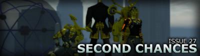

Issue 27
Issue 27 is the second major release for Homecoming.
Major Changes
- Sonic, Seismic Blast and Earth Manipulation manipulation
- Asymmetrical customization options
- Tour guide missions
- Dr. Aeon Strike Force
- Permanent NPC Costume Power Rewards
- Name Release - Phase 1: Warning Mode
Highlights
Page 1

- Two new story arcs featuring new characters, enemies, mission maps, badges and mechanics
- A new powerset: Sonic Manipulation
- Asymmetrical shoulder pads, stance selection, and sprint customization
- Reworks for Energy Melee, Titan Weapons, Teleportation, Trick Arrow and Blaster Secondaries
- Energy Melee for Scrappers
- Tons of improvements for PvP, including 9 new arena maps
- Expanded gamepad support
- A whole host of improvements, balance changes, and fixes
Page 2

- Tour Guide Missions
- Travel Power Updates
- Power Changes
- PvP Changes
- Coordinates and /thumbtack commands
- A whole host of improvements, balance changes, and fixes
Page 3

- Dr. Aeon Strike Force
- Difficulty/Challenge Options
- Powersets: Seismic Blast and Earth Manipulation
- Proliferation: Scrappers and Stalkers Stone Melee and Stone Armor
- Revamps: Stone Armor, Electrical Blast, and Dual Blades
- IO Sets: Slow Movement and Travel
- D-Sync Origin Enhancements
- New Emotes
- Base Items
- Costume Parts
Page 4

- Marquee Features
- New Incarnate Mission Content: Sister Valeria
- New Powersets - Symphony Control, Sonic Assault
- Name Release Policy - Phase 1: Warnings
- New Advanced Difficulty - Imperious Task Force
- Advanced Difficulty Improvements & New Reward Currency
- Permanent NPC Costume Power Rewards
- Powers & Gameplay Adjustments
- Enemy Aggro Revamp
- Attack Typing Adjustments
- New Tech: Power Toggle Suspension
- Temporal Warriors, Instant Level 50 PvP Characters
- Character Customization Improvements
- Sheathed Weapons System
- Custom Weapons Expansion
- Costume Part Proliferation & Fixes
- Arachnos Widow Costume Update
- Parkour and Blitz Movement Stances
- Walk Animation Customization
- Various Additions & Enhancements
- New Badges
- Cimerora Tour Guides
- Proliferated Emotes
- New Roleplaying & System Commands
- New AE Mission Maps, NPCs, Custom Enemy Powersets, and new Advanced Enemy Customization
- Fort Trident & The Crucible Revamp
- Roleplaying Pub(V) and Luau(H) Area Additions